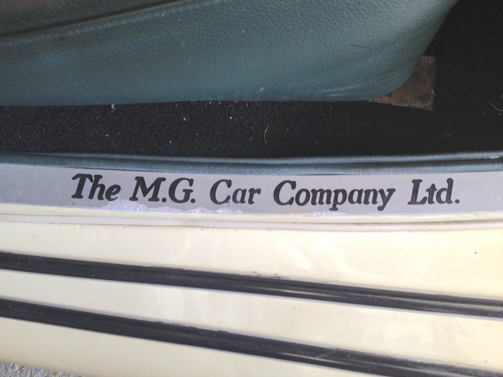
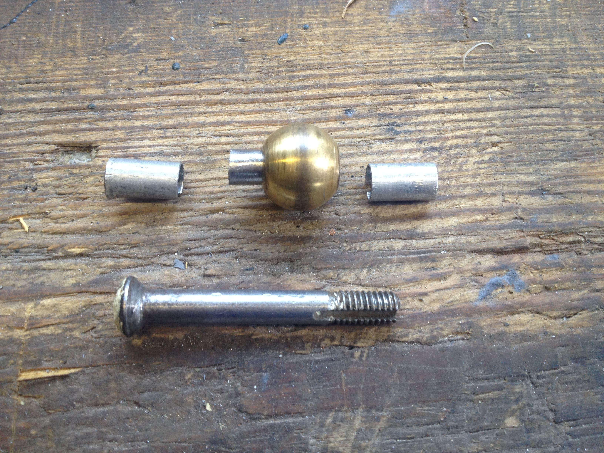

As can be seen from the photograph, there is evidence that the driver's door on TC4985 has dropped. The sill plates were installed in about 2013 by a previous owner, who then didn't drive the car. Then the next owner also hardly drove the car, in fact there were only 148 miles on the clock when I bought it in 2015. So most of the wear on the sill plate must be down to me. Finally in July 2020 I got around to investigating it.
As I lifted the door, the two parts of the top hinge did not move on their fixings to the tub and to the door, but the pin joining them did. However, when I removed the pin it didn't show any sign of wear, so it seems to be the holes through the hinge parts that are worn. Once the door was removed, the 'slop' in the hinge parts was evident. The brass ball that sits between the upper and lower hinge parts (and on which the door rotates) also showed some looseness around the pin.
Clearly, replacing the pin and ball would not help matters, so I needed to put bushes in the holes. I didn't have any 1/4" ID tubing and I didn't want to start by drilling out the holes in the hinge parts, so I thought I would try cutting a piece of steel alloy sheet, about 16 thou thick, wrap it around the pin to form a tube and push that into the hole in the hinge part. The hole through the brass ball was of a smaller diameter, so I hammered the sheet to thin it and then, after wrapping around the pin, used a needle file to reduce its diameter until it would fit in the hole and allow the pin to rotate. The photo shows the three tubes that were fabricated.
Initially I thought that the spring on the end of the pin would fit over the tube, but it wouldn't, so I had to make a shorter version of the lower tube.
I only did this on the upper hinge, but when the door was replaced and the pin tightened there was a marked improvement. Now I just need to adjust the catch so that the door closes without needing to slam it and then think about a more robust bushing in the future.
(Written 31st July 2020; published in MG Octagon Car Club, Bulletin, October 2020.)
© David James 2020 Last updated: 14th October 2020